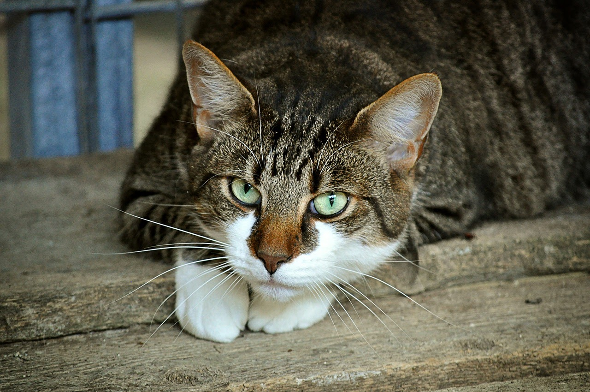
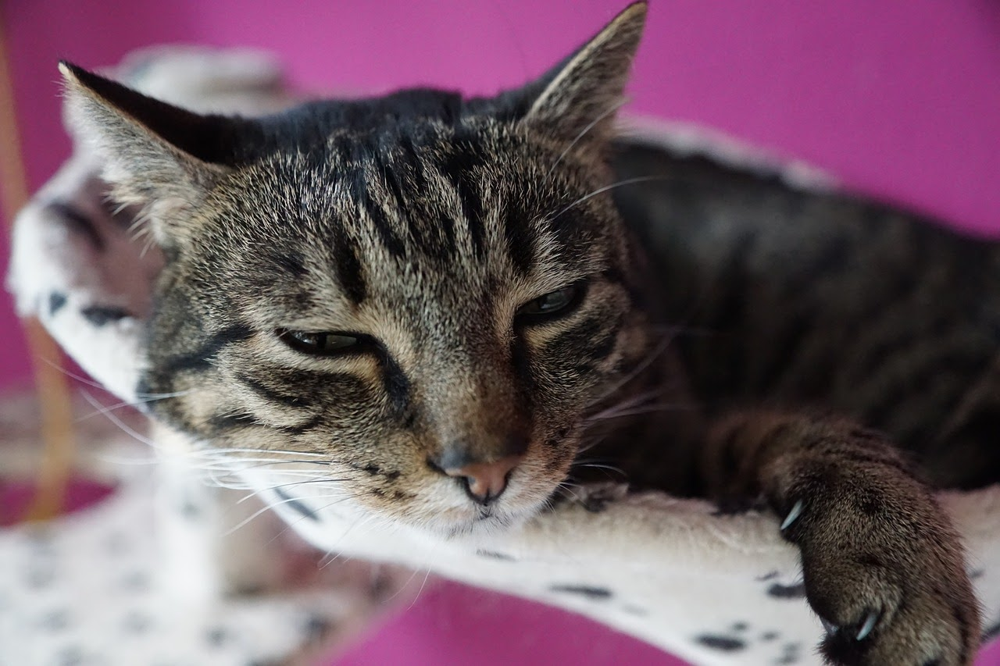
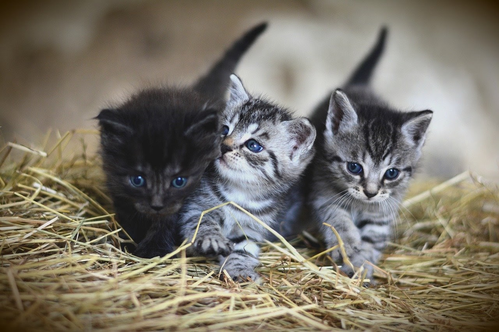
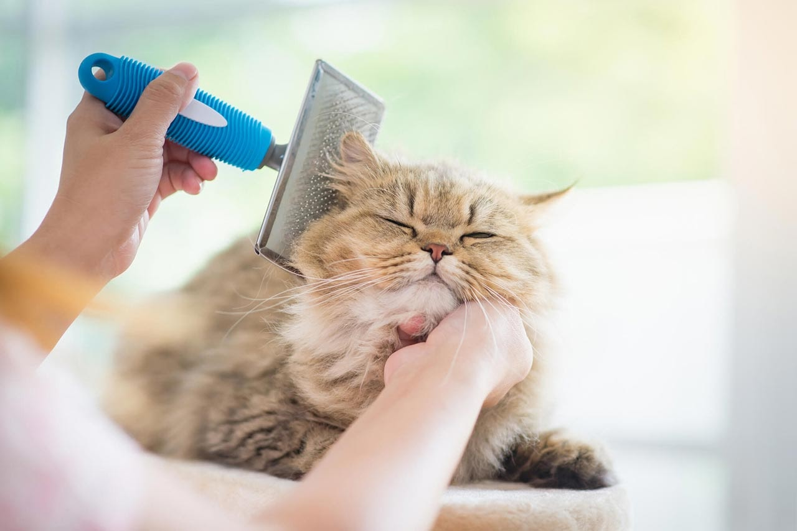

Rụng lông là một tình trạng rất phổ biến ở mèo. Nhiều bạn mới nuôi mèo khi gặp tình trạng này thường không biết xử lý như thế nào. Vậy nên hôm nay Mini Pet sẽ tổng hợp tất cả những thông tin mà các bạn nuôi mèo cần phải biết khi thú cưng của mình bị rụng lông.
1. Nguyên nhân và biểu hiện của mèo rụng lông
- Mèo rụng lông tự nhiên
Đôi khi mèo rụng lông không đúng thời điểm. Vậy nguyên nào dẫn đến sự bất thường trên có thể nhận biết đó không phải bệnh?
Thời gian tiếp xúc với ánh sáng
Thông thường, nếu thời gian mèo tiếp xúc với ánh nắng mặt trời nhiều hơn thì mèo rụng lông đều đặn và đúng thời điểm hơn. So với mèo trong nhà, chúng thường sẽ rụng lông liên tục nhưng không nhiều như số mèo ở ngoài trời. Hơn nữa, mèo nuôi trong nhà lông có thể rụng bất cứ lúc nào. Do thời gian tiếp xúc với ánh sáng mặt trời ít hơn.
Giống mèo
Tùy vào giống mèo mà gen di truyền sẽ dẫn đến số lượng lông rụng khác nhau. Những bé mèo có lông ngắn một lớp như mèo Xiêm, Miến Điện hay mèo Việt Nam (khí hậu nóng). Lượng lông rụng ít. Đặc biệt hơn cả là các bé Sphynx thậm chí chẳng bao giờ rụng lông, đúng không nào? Các bé mèo lông dài như Maine Coon hay Ragdoll, mèo Ba Tư bị rụng lông nhiều hơn, lượng lông mất đi rõ ràng hơn rất nhiều.
Mèo mẹ đang cho con bú
Khi mèo đang mang thai và cho con bú, trong người sẽ có sự thay đổi lượng tiết tố. Cũng có thể kể đến các bé mèo sau khi bị thiến, triệt sản cũng bị ảnh hưởng do nội tiết tố gây ra. Các hormone tiết ra sẽ khiến chức năng cơ thể bé không ổn định. Rụng lông cũng là một ảnh hưởng phụ của sự thay đổi ấy.
- Mèo rụng lông do bệnh
Nếu mèo của bạn không rụng lông tự nhiên, nhưng hiện tượng này diễn ra bất thường. Lông mèo rụng thành từng mảng, to nhỏ khác nhau. Dẫn đến trụi lông một số vùng trên cơ thể. Đó là lúc bạn nên đặt nghi vấn về bệnh ngoài da ở mèo.
Lông rụng do vi khuẩn, ký sinh trùng
Nếu bạn phát hiện mèo bắt đầu gãi nhiều hơn, cố chà xát rất nhiều vào tường. Liếm lông nhiều hơn mỗi ngày. Rất có thể mèo đã bị bệnh ngoài da như bệnh ghẻ Demodex hoặc ve và bọ chét kí sinh. Dẫn đến các bệnh viêm da cục bộ, mèo rụng lông từng mảng, trầy xước và chảy máu.
Da bị nhiễm khuẩn do nấm, mốc
Mèo rụng lông do bị nấm cũng là một trong những căn bệnh ngoài da phổ biến. Sức khỏe mèo lúc này sẽ giảm sút, lười vận động. Các vùng mèo bị nấm rụng lông chủ yếu là sẽ ở đuôi hoặc tai.
2. Cách chữa mèo rụng lông- Tắm rửa thường xuyên
Rụng lông chủ yếu là do môi trường ngoài tác động lên da của mèo. Do vậy, điều quan trọng người nuôi cần làm để phòng ngừa, đảm bảo sự ổn định sức khỏe của bé chính là tắm rửa thường xuyên cho bé. Một cơ thể sạch sẽ mang đến sự an toàn cho làn da.
Chế độ dinh dưỡng hằng ngày cũng tác động rất lớn đến sự phát triển lông của mèo.Một bữa ăn nghèo nàn, thiếu chất dinh dưỡng sẽ khiến lông mèo thiếu sức sống. Lông khô ráp, không mượt mà và rụng lông thường xuyên hơn. Bạn nên cho bé ăn đầy đủ chất, khẩu phần ăn mỗi ngày nên chứa các dưỡng chất quan trọng thiết yếu.
- Vệ sinh chỗ ở
Chỗ ở, môi trường sống ẩm thấp là điều kiện chính để nấm mốc và ổ vi khuẩn tích tụ. Gây ra vô số căn bệnh ngoài da và bệnh khác ở mèo. Mèo bị nấm rụng lông cũng xuất phát điểm từ nguyên nhân trên. Do vậy, bạn nên thường xuyên vệ sinh chỗ ở của bé.
- Sử dụng thuốc đặc trị rụng lông cho mèo
Nếu mèo bị rụng lông do các tác nhân gây bệnh bên ngoài, đặc biệt là khuẩn kí sinh, bệnh ghẻ Demodex. Mèo rụng lông từng mảng, da ửng đỏ nghiêm trọng. Bạn nên đưa bé đến ngay các cơ sở thú y uy tín để khám và chữa trị kịp thời.
- Thường xuyên chải lông cho mèo
Đối với những bé mèo có lớp lông dày, những lông thừa còn bám lại trên da cũng là một điều kiện thuận lợi cho các vi khuẩn bám vào và phát triển mạnh mẽ gây bệnh. Chính vì vậy, đừng quên chải lông cho mèo thường xuyên bạn nhé. Việc này sẽ giúp mèo giảm rụng lông đáng kể. Đồng thời còn giúp bạn tăng kết nối, tình thân với mèo cưng của mình nữa đấy.
- Điều chỉnh chế độ ăn uống cân bằng, hợp lý
Chế độ dinh dưỡng hằng ngày cũng tác động rất lớn đến sự phát triển lông của mèo.Một bữa ăn nghèo nàn, thiếu chất dinh dưỡng sẽ khiến lông mèo thiếu sức sống. Lông khô ráp, không mượt mà và rụng lông thường xuyên hơn. Bạn nên cho bé ăn đầy đủ chất, khẩu phần ăn mỗi ngày nên chứa các dưỡng chất quan trọng thiết yếu.
Trên đây là tất cả những lưu ý mà bạn cần biết khi mèo cưng của bạn bị rụng lông. Mini Pet chúc chú mèo của luôn luôn khỏe mạnh.